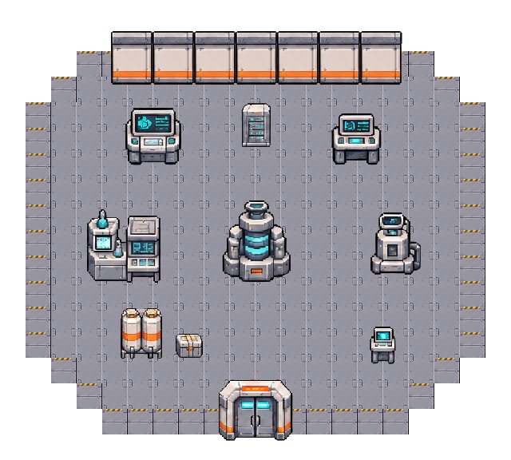
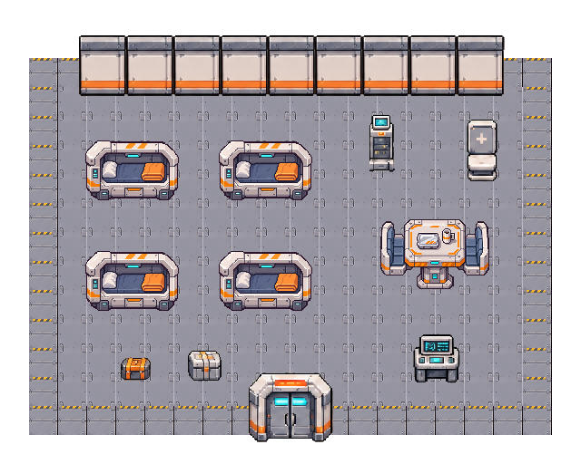
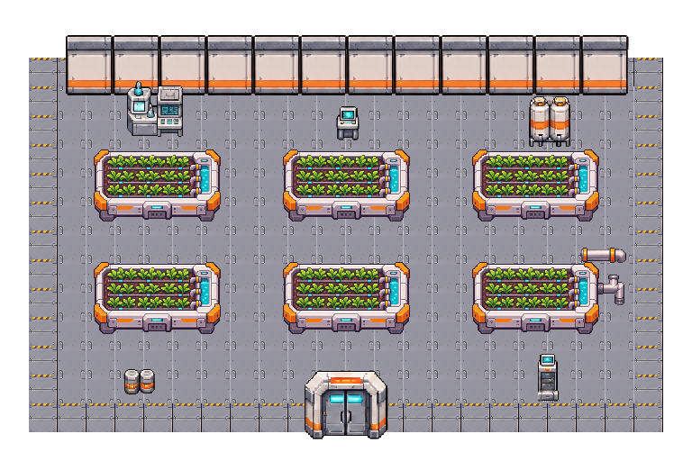
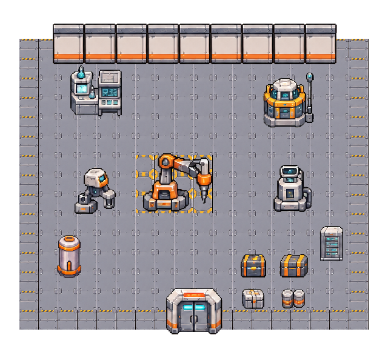
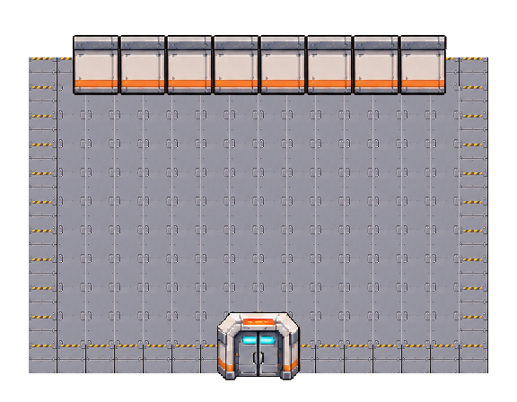

INTERIOR REUTILIZABLE
Laboratorio del domo
Investigación, análisis de muestras y control ambiental del domo.
Cuatro módulos equipados y una plantilla vacía. Coherentes con los edificios y reutilizables en otros mapas.

Investigación, análisis de muestras y control ambiental del domo.

Cuatro plazas de descanso, comedor, atención médica y terminal de misión.

Seis bancales reutilizables, riego, reserva de agua y control de atmósfera.

Robótica, reparación del rover, energía, herramientas y almacén de carga.

Suelo, estructura y esclusa listos para duplicar y equipar.
Suelo y paneles metálicos, esclusas naranjas y equipos cian proceden de las mismas hojas que el exterior. Camas, comedor y bancales se crearon siguiendo esas referencias. Cada elemento tiene PNG y Aseprite; cada mapa conserva sus objetos por separado.
Para crear otro edificio, duplica un proyecto o abre la plantilla vacía. Guarda los cambios como proyecto JSON. Las entradas y salidas contienen identificadores de enlace; la lógica de transición del juego se implementa por separado.